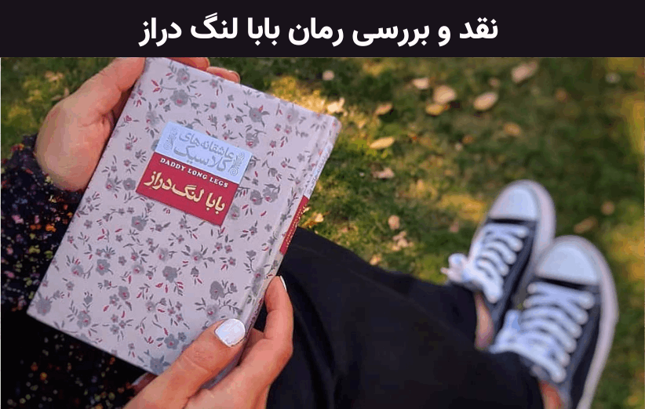

معرفی کتاب بابا لنگ دراز
کتاب بابا لنگ دراز یکی از مشهورترین عاشقانههای ادبیات آمریکایی در قرن بیستم است. در این اثر درخشان که به قلم جین وبستر به رشتهی تحریر درآمده، مخاطب داستان زندگی جودی ابوت خواهید بود؛ دخترکی پرورشگاهی که طی نامههایی زیبا و پراحساس، با حامی ناشناس خود از افکار و عواطف خویش سخن میگوید. لازم به ذکر است که اثر پیش رو ذیل مجموعهی «عاشقانههای کلاسیک» نشر افق به انتشار رسیده است.
کتاب بابا لنگ دراز مناسب چه کسانی است؟
از تمام نوجوانانِ علاقهمند به ادبیات کلاسیک دعوت میکنیم که به مطالعهی کتاب بابا لنگ دراز، شاهکار درخشان جین وبستر، بنشینند.
